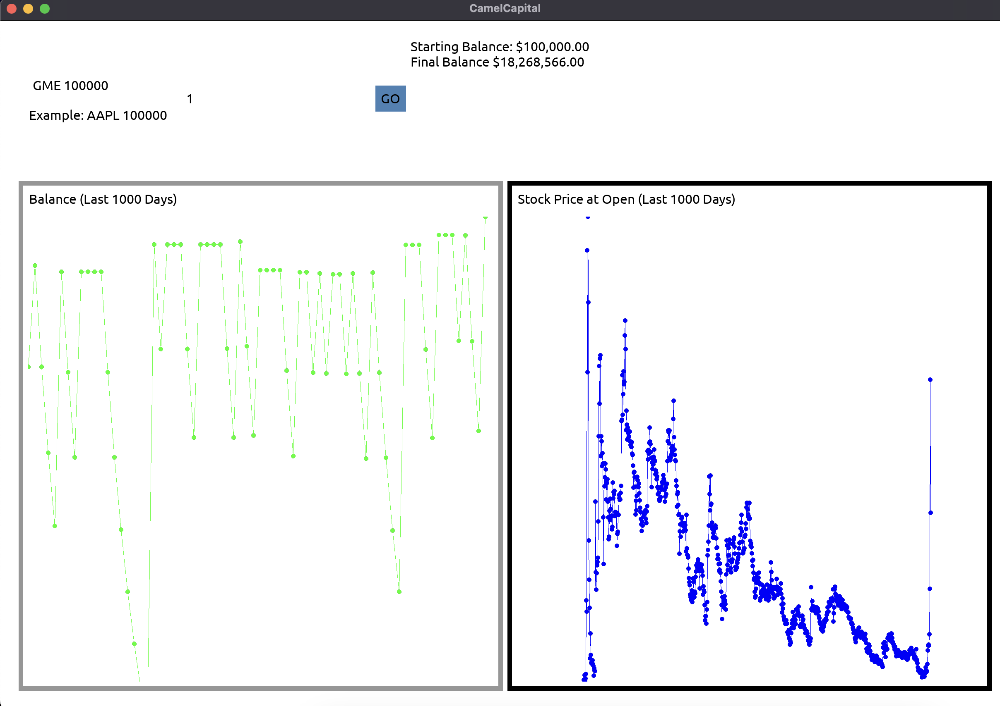
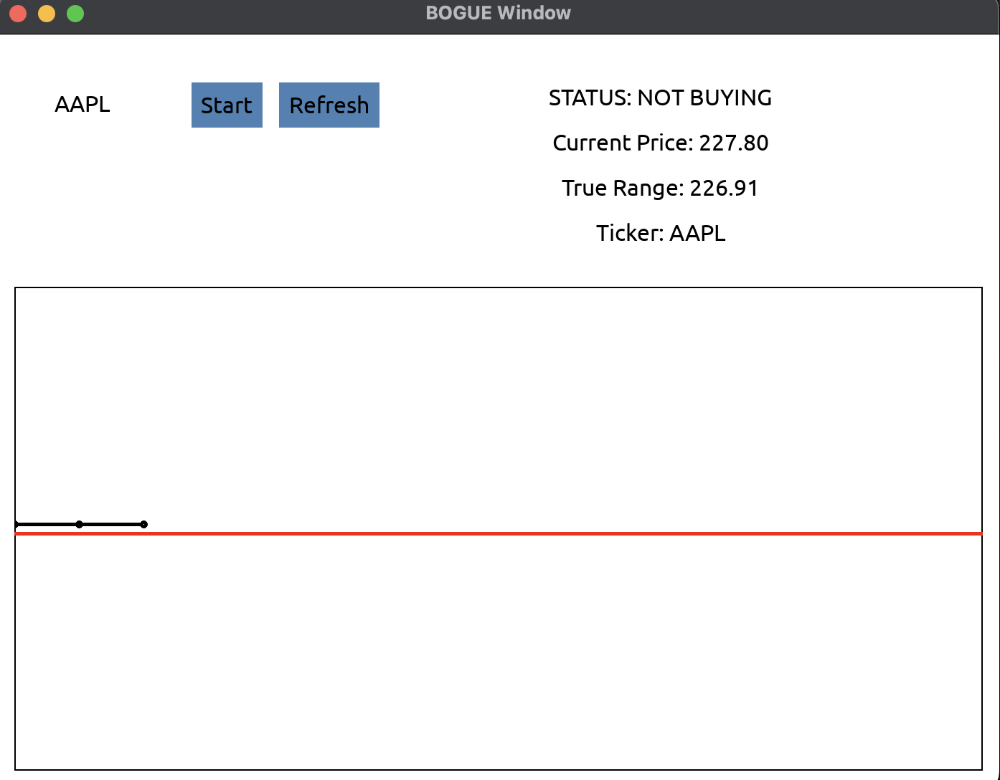
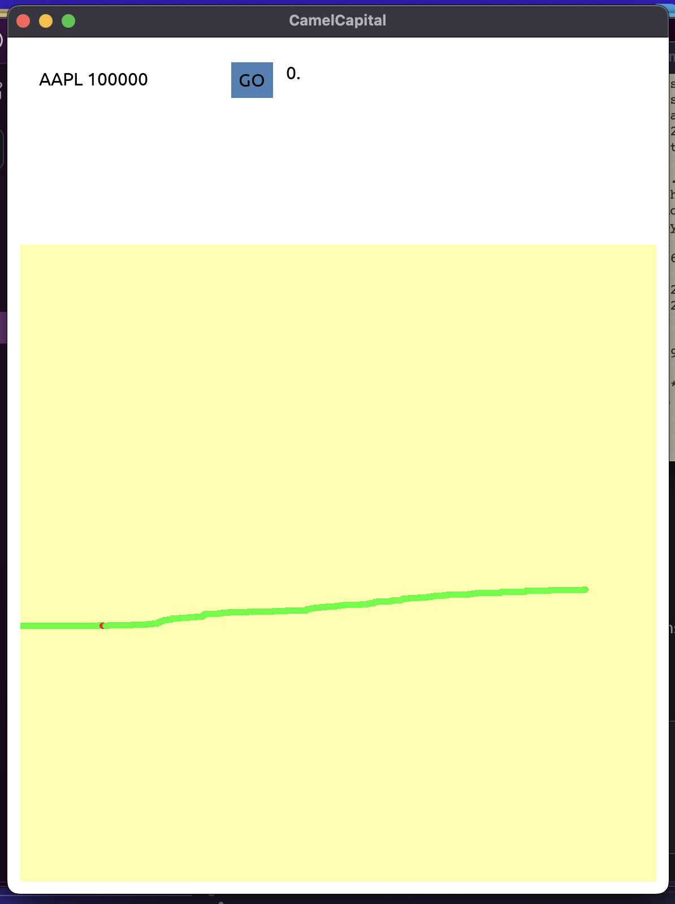

CamelCapital Development Blog
Overview
This project was built as the final project for CS 3110-Data Structures and Functional Programming. I created it with a team of three other engineers:
- Amaan Rehan
- Carson Wolber
- Jepthah Mensah
I was responsible for building the GUI, as well as refactoring most of the code to meet format standards required by the class.
Our workflow during the development period for this project was broken into three sprints, each of which lasted about a week. Overall, this project was under development for roughly three months and totaled 1800 lines of code in its totality.


Design Challenges
My primary challenge during development was finding a stable and well-enough-documented GUI library for OCaml. Shout-out to the developers of Bogue for building a comprehensive engine with friendly documentation.
Once I discovered Bogue, I spent hours combing over the documentation and source code to learn how it functions. During this process, I learned much about how to read API documentation and how GUI libraries function in general.
Custom Graph Widget
To create the kind of GUI that I had pictured, I needed a way to display and update graphs based on large amounts of stock data. I ended up creating a widget that draws the graph pixel by pixel. This was far from the most elegant solution- but, with the amount of time I had and the limitations of the library it was the best I could come up with. And, it worked.

To the left is the first iteration of the custom graph widget. I built this widget on the SDL Area that is built into Bogue.
Generative A.I.
Generative A.I. was used for part of this project (as permitted by our syllabus) and it came with its own set of challenges. The code produced was unorthodox, and while it worked, the assignment required clean and idiomatic code.
I was responsible for refactoring and documenting the code generated by AI. In doing this, I combed over nearly every line in the main algorithm and developed a good eye for style. While I appreciate the benefits of Generative A.I., the time I spent refactoring tells me it has a long way left to go.